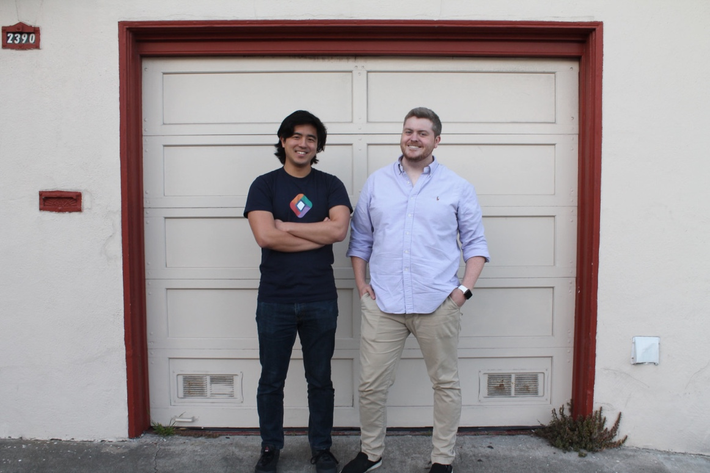
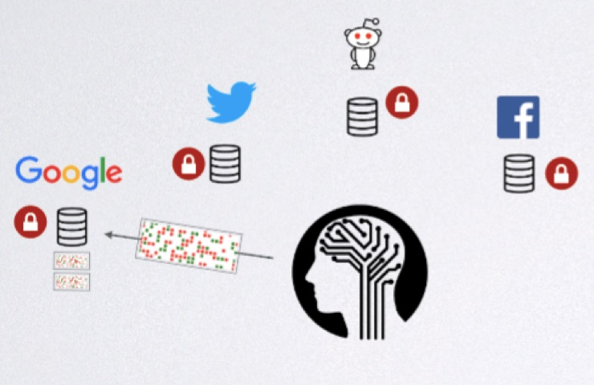
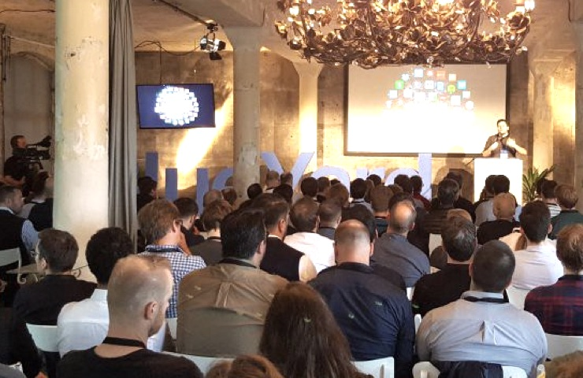
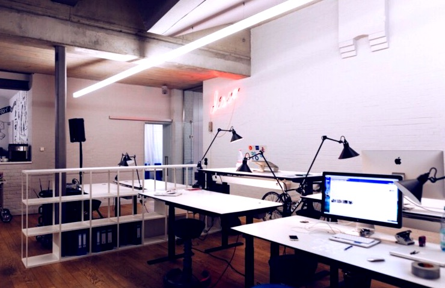
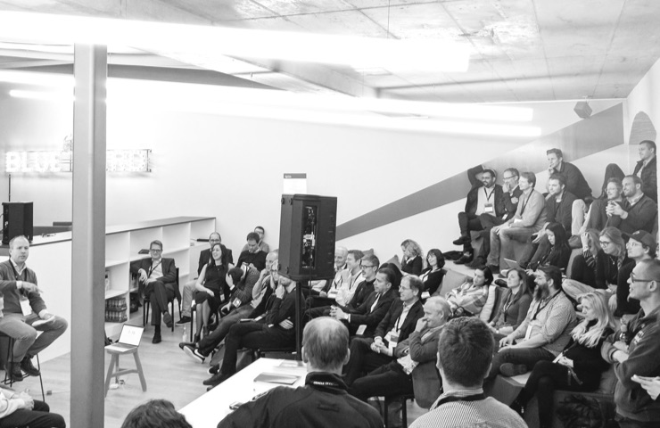

Portfolio
Updates
-
 StdLib just raised $2 million to connect businesses via APIs
-
We’re excited to be backing Protocol Labs on their mission to upgrade the internet from the protocol layer up
-
 Userfeeds and why the web needs a new information ranking system
-
 Join us for a Quantum Leap, June 22nd
-
 Join our crew as an Analyst
-
 We had all our BlueYard entrepreneurs and LPs in today.
We're very lucky to be working with all of them.